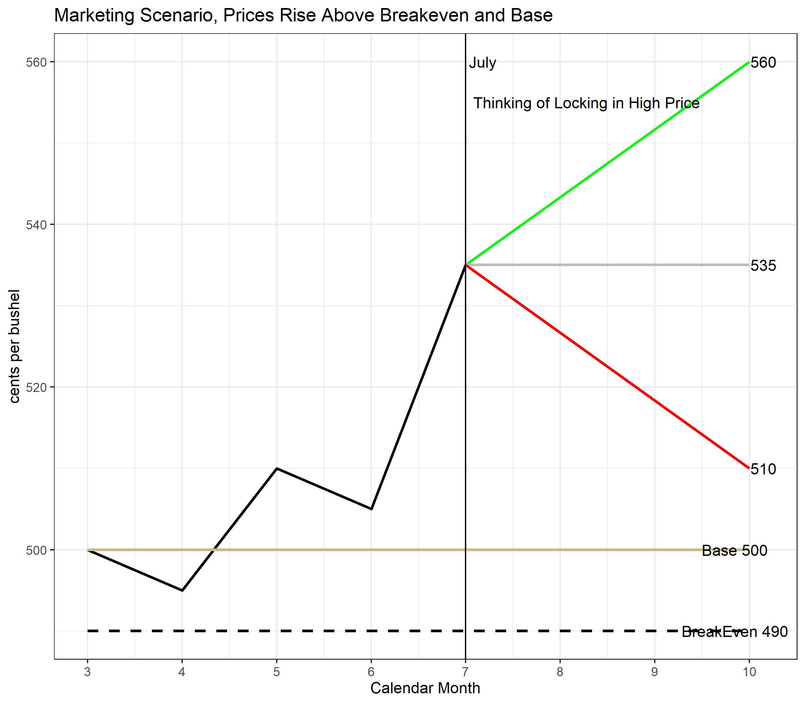

8 Marketing, Hedging, and Crop Insurance
Interested in more? Please let me know by taking the survey!
Highlights
- Purchasing crop insurance provides protection against catastrophic loss in the event of crop failure, and/or significant price decline between planting and harvest
- How much protection crop insurance alone provides varies based on pre-harvest price movements
- Crop insurance alone does not provide an optimal marketing plan for some scenarios of price movement planting-harvest
Check Your Understanding
8.1 Brief History of Crop Insurance Prior Federal Farm Support Programs
Currently crop insurance dominates the landscape of federally sponsored farm programs for risk management (Walters and Preston 2017). However, the history of market interventions and price supports in the United States is long and varied. Understanding the economic and political motivations for moving from price supports and ad hoc disaster payments (payments made when there is a large unexpected crop failure) to federally subsidized crop insurance is interesting, However, a full account is beyond the scope of this chapter. Readers can refer to the following for additional historical context (Babcock and Hart 2006; J. Glauber and Effland 2016; Cochran 1951; Marcus and Modest 1986; Lichtenberg and Zilberman 1986; “History of Agricultural Price Support and Adjustment Programs” 1984).
The short story is that price supports can distort markets by creating inefficiency in production decisions and generate ill will with trading partners through subsidizing too much production and lowering world prices to the detriment of farmers in other countries. Further, ad hoc disaster payments are by nature not predictable in the timing of when they are needed nor in the size of the need. Both of these created an appetite among lawmakers for a farm support program whose cost was more predictable.
Over the last 30 years crop insurance has come to be the dominant way in which federally sponsored risk management is administered to commodity producers. Two challenges had to be overcome, however.
First, crop insurance is a product that is not possible to be offered exclusively by the private sector. Insurance markets can exist in the private sector when the insured losses are relatively small (compared to premium collected) and predictable from year-to-year (Babcock and Hart 2006). Crop insurance is neither of these things because 1) losses are typically highly correlated. When there is a crop failure, most farmers in the affected region experience a loss and make a claim on the policy. This makes it very hard for a private insurance company to ensure they have enough liquidity to pay for losses in the event of a widespread crop failure. Therefore, without a federal backstop to the policies, the private market could never offer crop insurance.
The first crop insurance programs administered by the federal government from the 1930’s to the 1980’s did not attract sufficient usage among farmer to prevent the passage of additional ad hoc disaster payments (J. W. Glauber 2013). This is a problem because the administration of the federal crop insurance program is costly, so if taxpayers have to pay to administer the crop insurance program and pay for ad hoc disaster from time-to-time, the program is not meeting its purpose and wasting taxpayer money at the same time by paying for two solutions (Babcock and Hart 2006).
A series of reforms through the 1980’s and 1990s including the Federal Crop Insurance Act of 1980 and the Crop Insurance Reform Act of 1994 led first to making purchase of crop insurance coverage mandatory for farmers to receive other program payments. Then the mandatory coverage requirement was removed in favor of premium subsidies. Congress increased the subsidy rate for crop insurance premiums to levels where farmers voluntarily purchase enough coverage to reduce the need for frequent disaster payments. At the time of writing, federal subsidies for crop insurance average 62% of the premium cost (Zulauf 2016).
8.2 Overview of Typical Crop Insurance offerings
Yield Protection and Area Yield Protection
Yield Protection guarantees against a loss of production less than a percent of Actual Production History (APH). Indemnities are paid when production falls below the APH and are paid based on that production year’s projected price (for corn and soybeans this is an average of the new crop futures settlement prices during February). Area Yield Protection is similar, but the yield guarantee is based on county yields, not the individual producer’s.
Revenue Protection and Area Revenue Protection
Revenue protection guarantees against loss of revenue below the APH times the greater of the projected price (new crop price in February) and the harvest price (the new crop price at harvest). Since farmers are concerned with revenue loss, not necessarily yield loss, this type of contract gained popularity.
Area Revenue Protection, similar to Yield Protection, calculates the revenue guarantee against the county APH rather than the producer’s APH.
Revenue Protection with Harvest Price Exclusion
Revenue protection with Harvest Price Exclusion is the same as Revenue Protection, except the policy does guarantee based on the Harvest Price, Revenue is calculated based on the Projected price times APH.
8.3 Pre-Harvest Marketing Strategies Paired with Crop Insurance Protection
Now we turn our attention to marketing strategies that can complement crop insurance, since roughly 90% of U.S. cropland is insured in some way in the Federal Crop Insurance program(Farrin, Miranda, and O’Donoghue 2016). The rest of this section will consider marketing strategies to lock in a forward price of insured bushels. Note that marketing uninsured bushels is very risky in the event of a crop failure. For example, suppose you entered into a forward contract to deliver 1000 bushels of corn at $5.00 per bushel, but you experienced yield losses so that you only made 500 bushels. You cannot meet your obligation to deliver 1000 bushels. In this case you will have to buy out the contract. You will have to buy 500 bushels in the spot market. Unfortunately for you, your crop failure is likely to be correlated with low production for many farmers, so prices are likely to be high. However, if you have Revenue Protection crop insurance, you are guaranteed coverage percent X APH X max(Base Price, Harvest Price). This revenue guarantee ensures you can at least buy out your forward contract in the event of a crop failure.
Second, from a hedging perspective the marketing decision is trivial if prices fall after the base price is set. You are already have revenue protected at a level of coverage level X APH X Base Price. So if price falls you are already hedged. If you take a bullish or bearish position you are a speculator at that point.
It does become an interesting marketing question in the case where the price rises after the Base Price is set at the first of March. The producer is exposed to price uncertainty to both the upside and downside. However, with revenue protection, revenue is guaranteed at the harvest price unless price falls below the Base price.
Such a scenario is shown in the figure below. Also in this assumption is that the Base Price of $5.00 is above the BreakEven Price of $4.90. Then, suppose as of July the December corn futures price is $5.35, a substantial rise above the Base Price. Should a producer lock in this high price?

To simplify our thought experiment, suppose that from July to October the price might do one of three things, rise to $5.60, stay flat at $5.35, or fall to $5.10. We will examine the following marketing choices: selling futures, or contracting for harvest delivery (we will assume zero basis to keep that part simple). Also, we will examine what happens if you make 100% of your APH, and what happens if you make 80% of your APH. For the sake of example, assume the APH is 200 bushels per acre, and coverage level on Revenue Protection policy is 85%. You can explore the moving parts yourself by going to the Google sheet here.